今日は一日イエローナイフに滞在。

朝、Ｂ＆Ｂでの朝食。
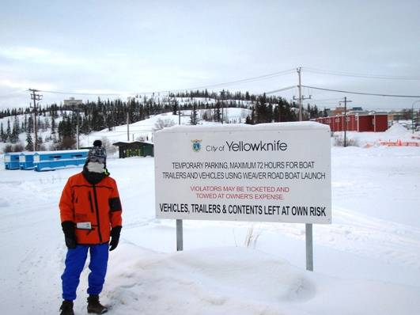
イエローナイフの街を散策。

ビジターセンター。
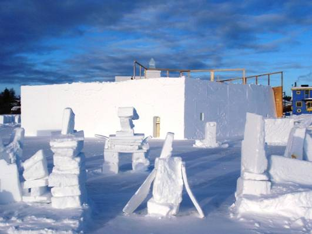
イエローナイフはノースウェスト準州の州都。
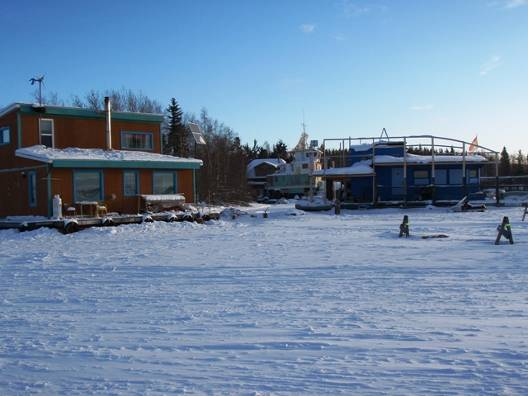
中倉。

山部。

州議事堂を見学。
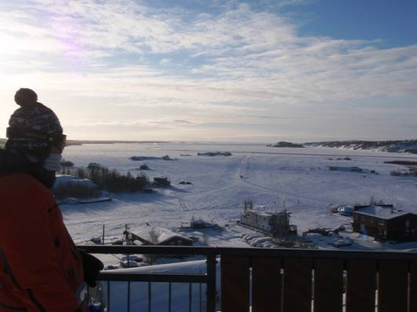
内部は非常にモダンな造り。
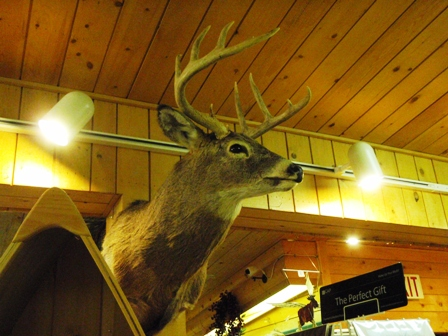
議場。

ホッキョクグマの毛皮が敷いてある。
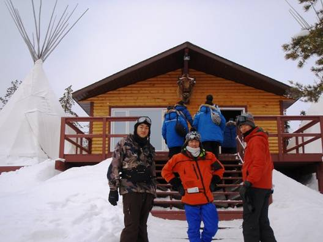
昼食。
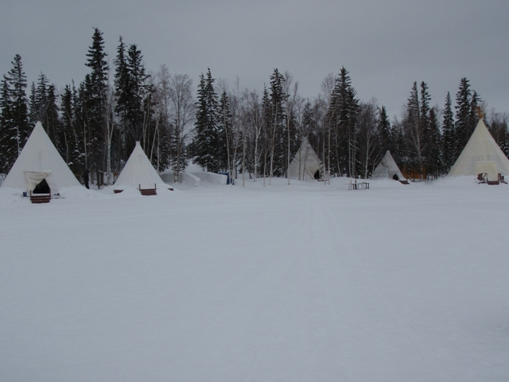
午後は「オールドタウン」へ。

イエローナイフ発祥の地。
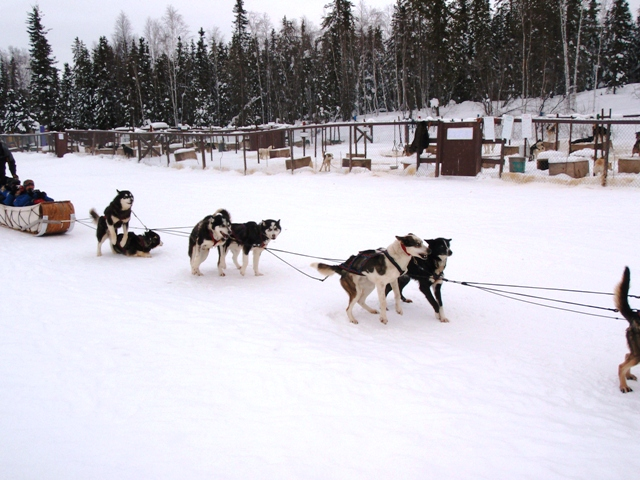
凍りついたグレートスレーブ湖。
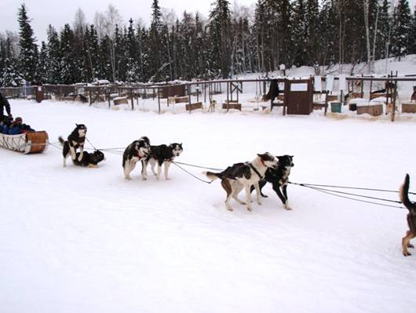
アイスロードを走ってみる。
湖の上に道ができている。
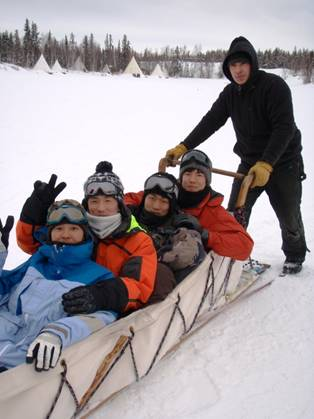
どこまでも続く真っ白な世界。
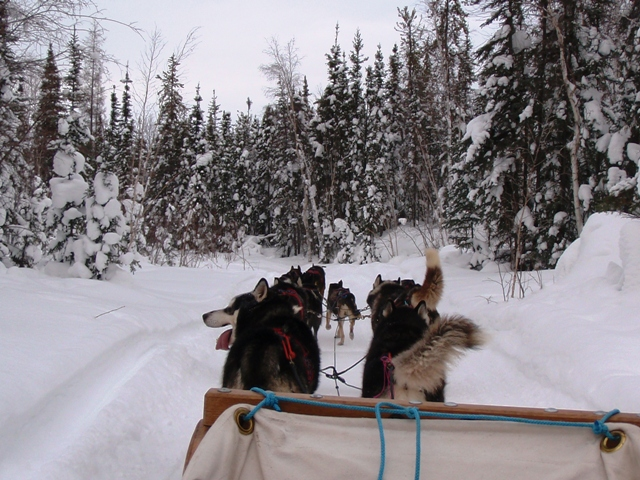
Jeepとアイスロード。
休憩中の中倉。
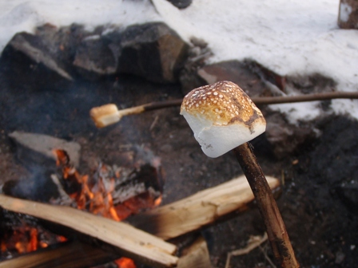
休憩中の山部。

夕食はＢ＆Ｂのキッチンで自炊。
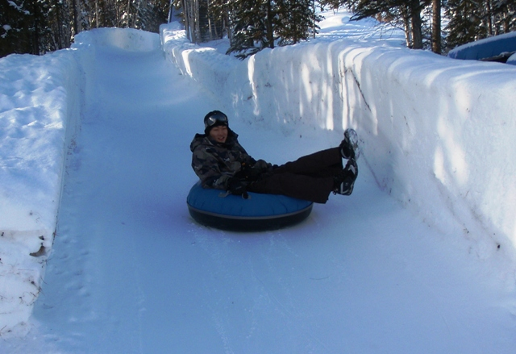
今夜もオーロラを求めて。

気温はマイナス３０度。
ついに、オーロラが現れた。
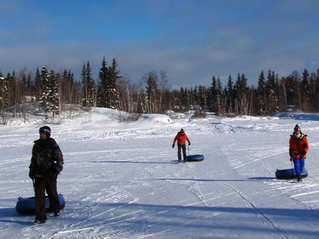
空一面に広がる光のカーテン。
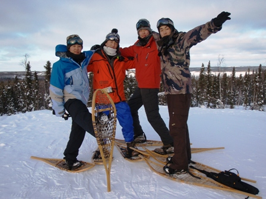
刻一刻と形を変えていく。

言葉を失うほどの美しさ。
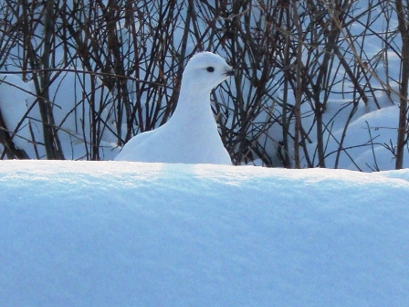
感動的な夜。
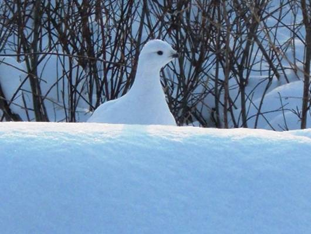
強烈な光。
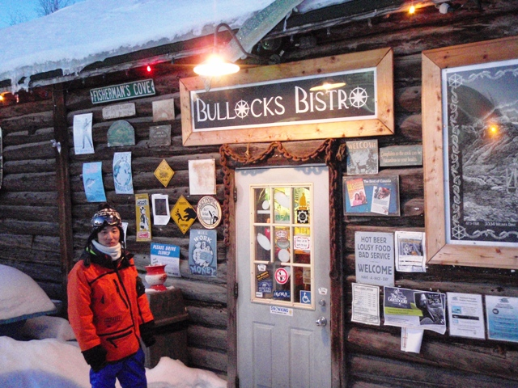
オーロラ爆発。
空が緑色に染まる。
記念撮影を試みるも、寒さでカメラが止まる。
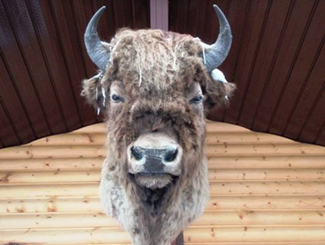
中倉とオーロラ。
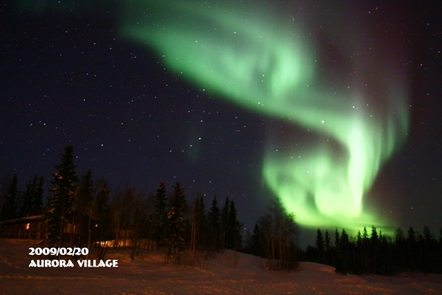
山部とオーロラ。

深夜２時、大満足で宿に戻る。